플러그인 마켓플레이스와 설치
영상은 Anthropic 공식 마켓플레이스에서 토큰 절약에 바로 닿는 플러그인 네 개를 골라요. 아래 슬라이드가 오늘 다룰 목록이에요. 이름 밑의 한 줄이 각 도구가 막는 지점이에요. 어디서 새는지 재고, 매 요청에 붙는 짐을 깎고, 코드를 의미로 찾고, 같은 실수의 재시도 사이클을 끊어요.
| 플러그인 | 슬라이드의 한 줄 | 언제 쓰나요 |
|---|---|---|
session-report | 어디서 새는지 측정 | 비용이 갑자기 늘었거나 캐시가 잘 먹는지 볼 때 |
claude-md-management | 매 요청 세금 깎기 | 세션을 마칠 때, 그리고 주기적인 점검 때 |
serena | 코드 검색 의미 기반으로 | 프로젝트 분석, 사용처 찾기, 리팩토링 |
hookify | 재시도 사이클 차단 | 클로드가 같은 실수를 되풀이할 때 |
마켓플레이스 찾아 들어가기
클로드 코드에서 /plugin을 치면 위쪽에 Plugins, Discover, Installed, Marketplaces 탭이 나와요. Marketplaces 탭을 열면 공식 마켓플레이스 claude-plugins-official이 이미 등록돼 있어요. 초록 밑줄 친 줄에 영상 시점의 플러그인 수 171개가 보여요.
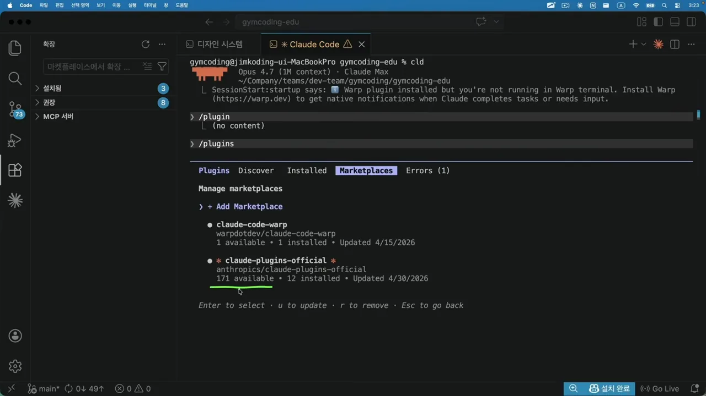
검색하고 설치하기
마켓플레이스에 들어가 Browse plugins로 목록을 훑어도 되지만, 너무 많으면 Discover 탭 검색창에 이름을 바로 치는 게 빨라요. 목록마다 설치 수와 한 줄 설명이 붙어 있어요. 고른 뒤 Enter를 누르고 설치할 범위(스코프)를 정하면 돼요.
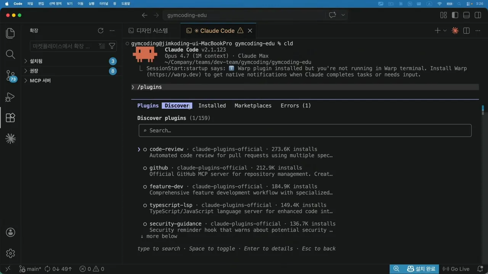
설치가 끝나면 터미널에 Run /reload-plugins to apply라는 안내가 떠요. 아래 상태 줄에도 Plugins changed. Run /reload-plugins to activate.가 보여요. 이 명령을 돌려야 지금 세션에서 새 플러그인을 쓸 수 있어요.
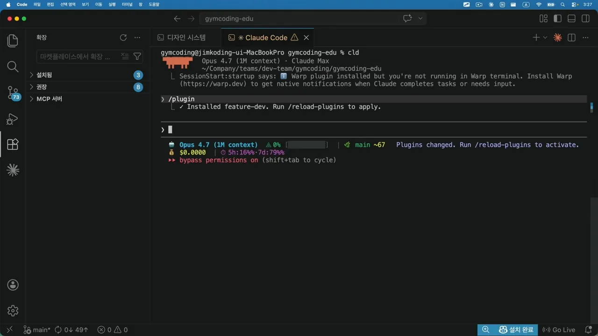
① session-report: 토큰이 어디서 새는지 보기
발표자는 이 플러그인을 카드 명세서에 빗대요. 카드 명세서가 카페·주유소·배달앱별로 얼마 썼는지 보여 주듯, session-report는 토큰을 프로젝트별·스킬별·프롬프트별로 나눠 한 화면에 보여 줘요.
쓸 때는 두 경우예요. 한 달 비용이 크게 나왔는데 어디가 문제인지 모를 때, 그리고 캐시가 제대로 작동하는지 확인하고 싶을 때예요. 작업 방식을 바꾼 전후를 비교하는 데도 써요.
캐시가 왜 중요할까요
클로드 코드는 비용을 줄이려고 프롬프트 캐싱을 알아서 써요. 아래 화면은 발표자가 띄운 Claude API(Application Programming Interface) 문서의 프롬프트 캐싱 페이지예요. 핵심은 시스템 프롬프트나 CLAUDE.md처럼 매번 똑같이 앞에 붙는 부분이에요. 이걸 한 번 처리해 캐시에 두면, 다음 요청부터는 그 부분 값을 10분의 1로 깎아 줘요.
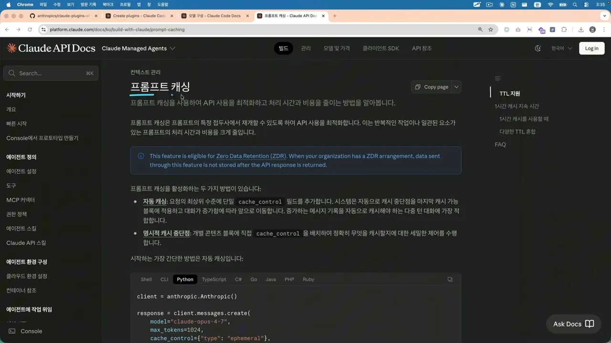
아래 그림은 말로 설명한 내용을 옮긴 거예요. 첫 요청은 고정부까지 제값을 내요. 두 번째 요청부터는 같은 고정부가 캐시에서 읽혀서 10분의 1만 내요. 캐시가 깨지면 두 번째 요청도 첫 요청처럼 다시 제값을 내요.
실행해 보기
"지난 30일 세션 리포트 만들어 줘"처럼 말로 부탁해도 되고, 발표자처럼 슬래시 명령으로 직접 불러도 돼요. 기간은 하이픈 두 개 옵션으로 줘요. 30일이면 30d, 24시간이면 24h이고, 안 주면 7일이에요. 화면 아래 회색 줄이 /session-report의 설명이에요. 토큰, 캐시, 서브에이전트, 스킬, 비싼 프롬프트를 담은 HTML 리포트를 만든다고 적혀 있어요.
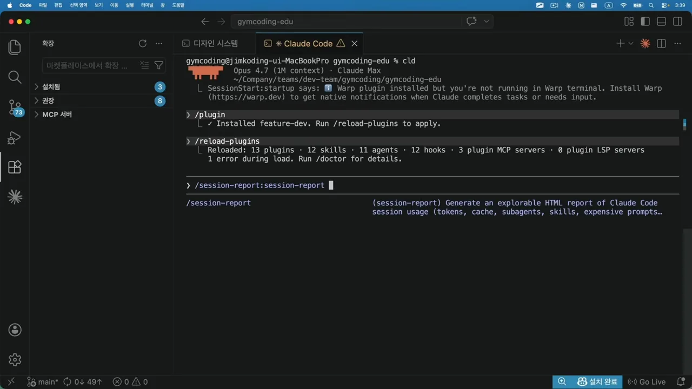
결과는 HTML 파일로 나와요. 맨 위 큰 숫자가 분석 기간(4월 23일~30일)의 총 토큰 1.01B예요. 바로 밑 줄에 그중 96.9%가 캐시 읽기였다는 비율이 있어요. 그 아래 findings에는 한 프로젝트가 7일 토큰의 77.6%를 썼다는 식의 요약이, 맨 아래에는 프로젝트별 사용량 막대가 이어져요.
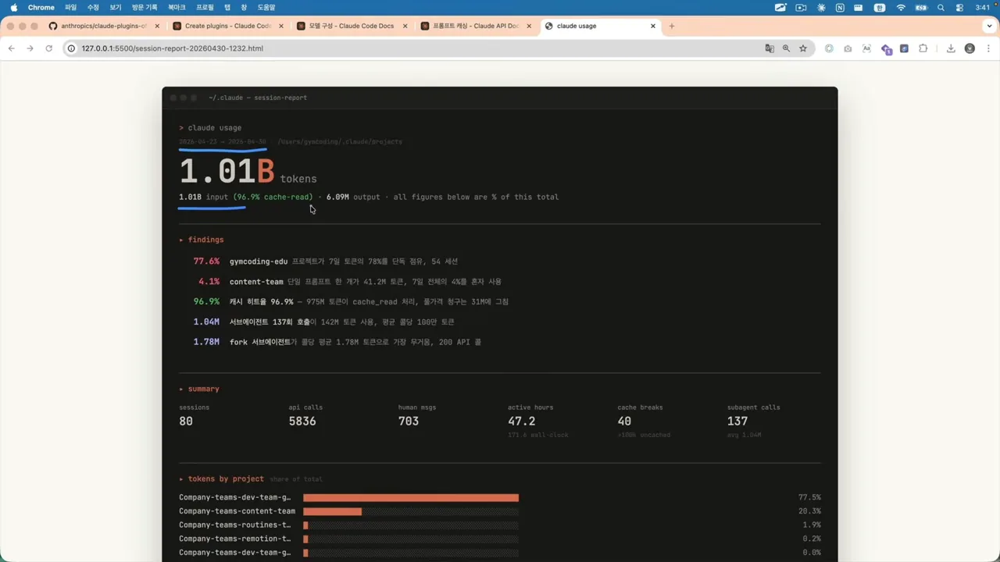
발표자가 가장 중요하다고 짚은 칸은 보라색으로 표시한 most expensive prompts예요. 프롬프트 하나가 전체의 몇 %를 썼는지, 호출 수와 서브에이전트 수, 캐시 비율이 함께 나와요. 항목을 누르면 그 프롬프트가 어떤 작업 사이클을 거쳤는지 펼쳐 볼 수 있어요. 위쪽 타임라인에서는 날짜별 사용 흐름도 보여요.
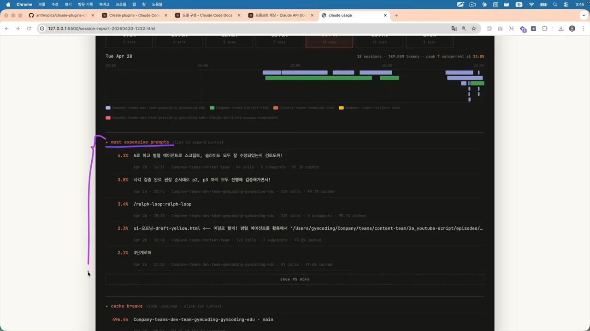
② claude-md-management: 매 요청에 붙는 짐 줄이기
CLAUDE.md는 프로젝트에서 클로드가 알아야 할 규칙을 적는 파일이에요. 발표자가 먼저 짚는 건 슬라이드의 이 한 줄이에요. 이 파일은 모든 요청에 자동으로 따라붙어요. 프로젝트가 길어질수록 규칙이 늘고, 파일이 무거워진 만큼 매 요청에 붙는 세금도 커져요.
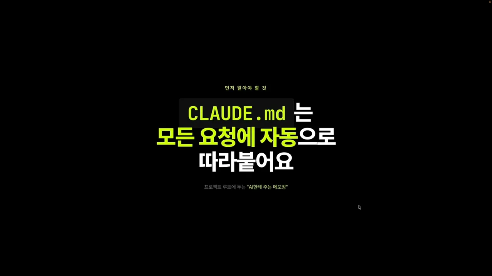
claude-md-management는 이 파일을 깔끔하게 유지해 주는 공식 플러그인이에요. 아래 슬라이드처럼 도구가 두 개 들어 있어요. 왼쪽 도구 A는 세션 끝에 한 번 쓰는 회의록, 오른쪽 도구 B는 주기적으로 부르는 감사관이에요. 슬라이드 아래에는 Anthropic의 Isabella He가 만든 공식 플러그인이라고 적혀 있어요.
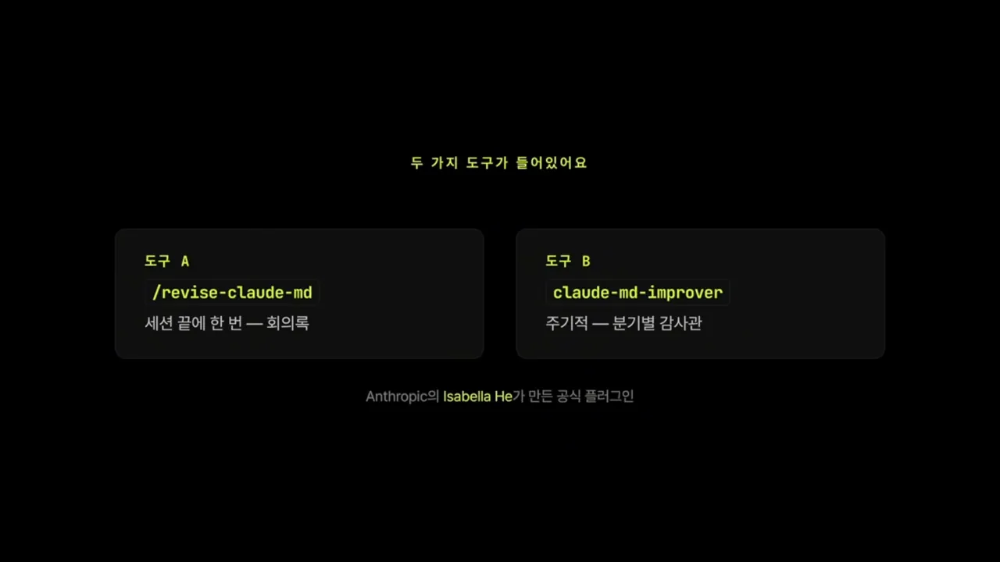
/revise-claude-md | claude-md-improver | |
|---|---|---|
| 비유 | 회의 끝나고 쓰는 회의록 | 분기별 감사관 |
| 언제 | 작업을 마치고 세션을 닫기 전 | 주기적으로 |
| 하는 일 | 이번 대화에서 새로 알게 된 명령어·작업 패턴·함정을 한 줄씩 뽑아 추가 후보로 보여 줘요 | 프로젝트의 모든 CLAUDE.md를 여섯 기준으로 채점하고 문제를 짚어요 |
/revise-claude-md: 세션 끝의 회의록
개발하다 보면 "이건 CLAUDE.md에 적어 둬야지" 싶은 게 생겨요. 그럴 때 세션을 닫기 전에 이 명령을 부르면 돼요. 데모 화면 아래쪽에 결과가 있어요. 첫 줄은 "이 세션을 돌아보면 CLAUDE.md에 추가할 만한 학습 거리가 거의 없습니다"예요. 그 밑의 Step 1: Reflect에서 이번 세션에 실제로 한 일을 하나씩 되짚어요.
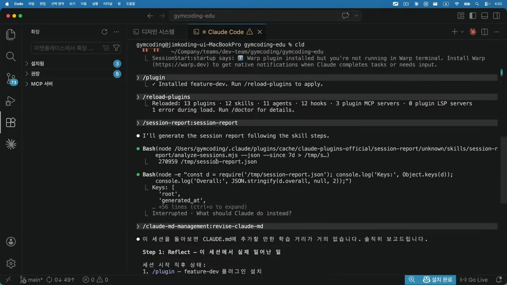
claude-md-improver: 여섯 기준으로 채점
두 번째 도구는 프로젝트의 CLAUDE.md를 모두 찾아 100점 만점으로 점수를 매겨요. 아래 슬라이드 왼쪽이 기준 이름, 오른쪽이 배점이에요. 명령어·워크플로와 구조 설명이 20점씩으로 가장 무겁고, 나머지 넷이 15점씩이에요. 채점하면서 거의 작동하지 않는 명령어, 빠진 의존성, 누락된 환경 설정 같은 구체적인 문제도 함께 알려 줘요.
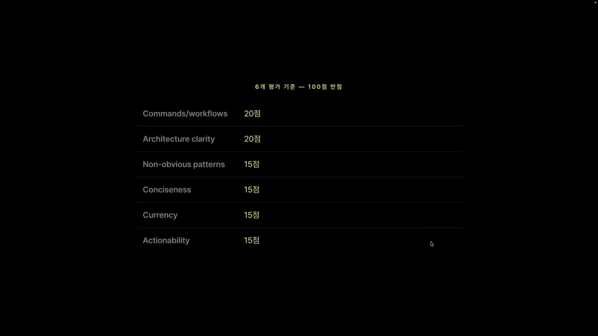
③ Serena: 글자 대신 의미로 찾기
"로그인 기능 확인해 줘"라고 하면 클로드는 login이라는 글자로 프로젝트를 뒤져요. 아래 데모의 초록 동그라미가 그 요청이고, 바로 밑 줄에 3개 패턴으로 검색하고 파일 8개를 읽었다는 기록이 남아요.
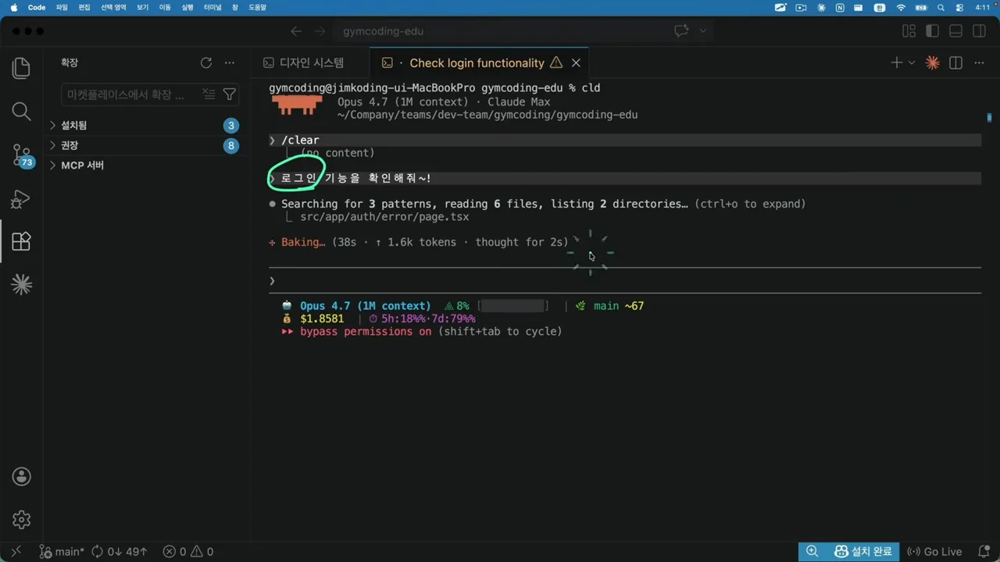
IDE(Integrated Development Environment)에서는 Ctrl+클릭 한 번이면 정의로 바로 가요. 편집기가 코드의 의미를 알기 때문이에요. Serena는 이 IDE식 검색을 클로드에게 붙여 주는 도구예요. 아래 슬라이드가 둘의 차이를 한 줄씩 비교해요. 왼쪽 grep 칸은 'login 들어간 모든 줄을 다 잡아요'이고, 오른쪽 Serena 칸은 '그 함수가 진짜 정의된 곳·호출되는 곳만'이에요.
왜 토큰 절약 1등일까요
발표자는 Serena가 특히 힘을 쓰는 상황을 슬라이드로 짚어요. 첫째는 "전체 프로젝트 봐 줘" 같은 요청으로 1M 컨텍스트가 통째로 차 버릴 때예요. 슬라이드 아래 회색 글씨가 이유예요. 클로드의 Read로 읽은 파일 내용은 세션 끝까지 빠지지 않아요. Serena는 함수 단위로만 가져와서 이런 폭주를 막아요.
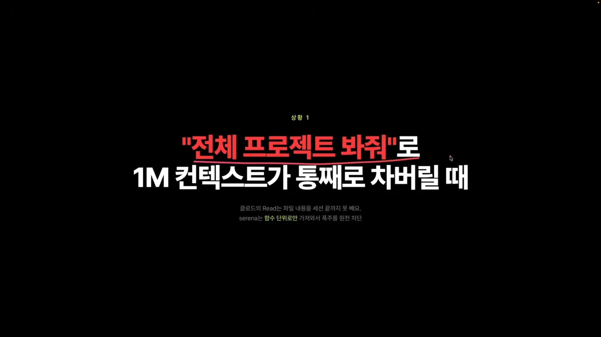
발표자는 숫자로 한 번 더 풀어요. 로그인 검색에 1만 토큰을 썼다고 해 볼게요. 그 검색 결과는 대화에 남아 있어서, 다음 질문을 할 때마다 그 1만 토큰을 다시 보내요. 아래 그림은 그 누적을 차례대로 그린 거예요. 대화가 길어질수록 처음 한 번의 검색값이 계속 쌓여요.
리팩토링에서도 차이가 나요. 상황 4 슬라이드의 예시처럼 AuthContext를 SessionContext로 바꾸려면, grep으로는 파일 30개를 하나씩 찾아 고쳐야 해요. Serena는 언어 서버가 의미 단위로 이름을 바꾸니 rename 한 번이면 끝나요.
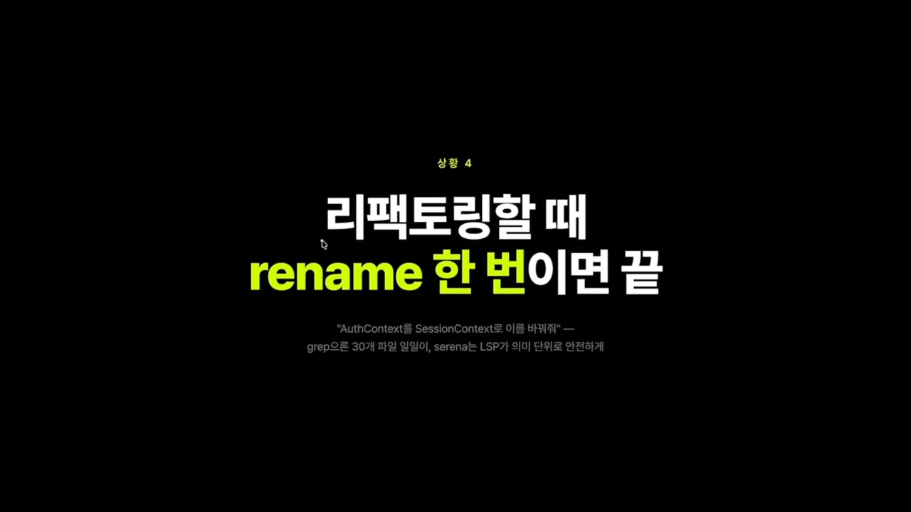
외부 도구인데도 공식 마켓플레이스에 들어 있다는 점도 짚어요. 아래 marketplace.json에서 보라색으로 표시한 항목이 Serena예요. 경로가 external_plugins/serena이고 태그가 community-managed라서, Anthropic이 만든 게 아니라 외부에서 관리하는 플러그인이라는 걸 알 수 있어요.
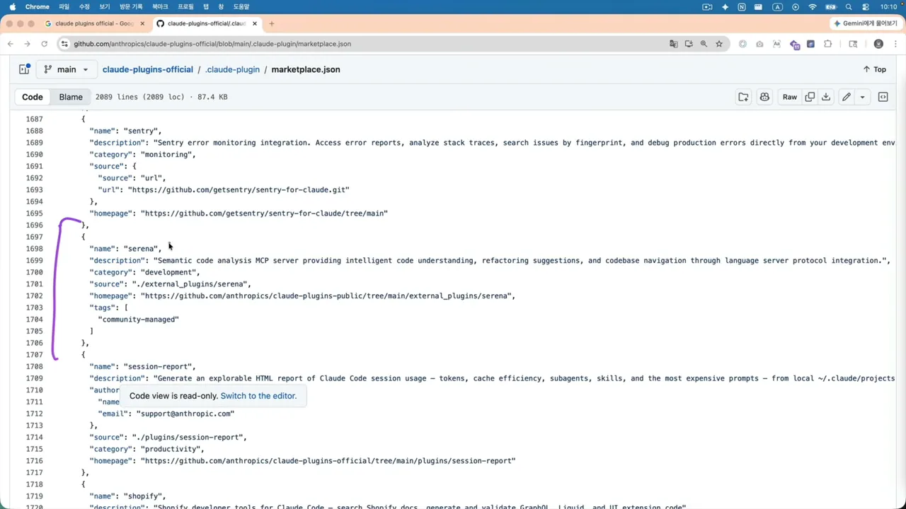
claude.com의 플러그인 페이지에도 Serena가 따로 소개돼 있어요. 설명 첫 줄은 언어 서버 프로토콜을 써서 코드를 이해하고 리팩토링·탐색을 돕는 의미 기반 코드 분석 MCP(Model Context Protocol) 서버라는 내용이에요. 오른쪽 위에 만든 곳이 Oraios로 적혀 있어요.
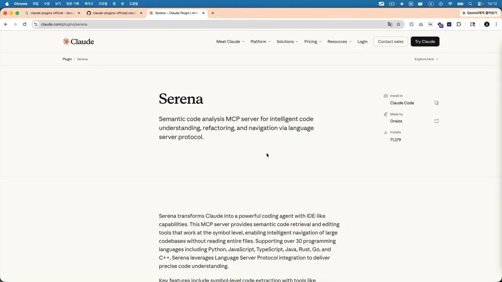
설치하고 연결하기
설치는 다른 플러그인처럼 /plugin에서 serena를 검색하면 돼요. 그런데 슬라이드가 강조하듯, Python 패키지 매니저 uv가 시스템에 깔려 있어야 연결돼요. 슬라이드 아래 작은 글씨처럼, uv가 없으면 uvx not found 에러가 나고 /mcp에서 Serena가 failed로 보여요.
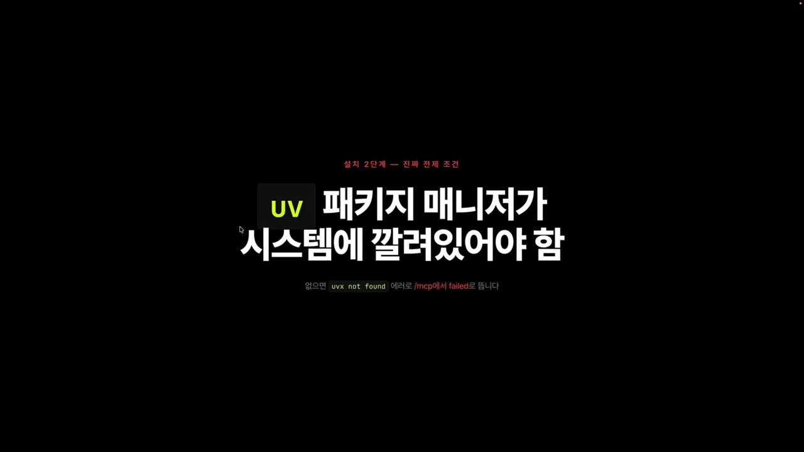
uv는 구글에서 'uv install'을 검색하면 나오는 공식 설치 페이지에서, 자기 OS(Operating System)에 맞는 명령을 복사해 설치해요. 그다음 /mcp를 열면 아래 화면처럼 Serena가 아직 failed로 남아 있어요. 그 줄에서 Enter를 누르고 Reconnect를 고르면 돼요.
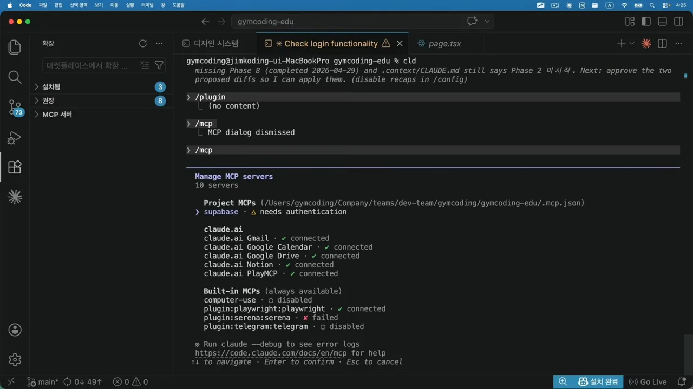
연결되면 Serena 대시보드가 로컬에서 브라우저로 떠요. 왼쪽 Current Configuration의 Active Tools (26)이 지금 쓸 수 있는 도구 수예요. 아래 Tool Usage 칸은 아직 비어 있어요.
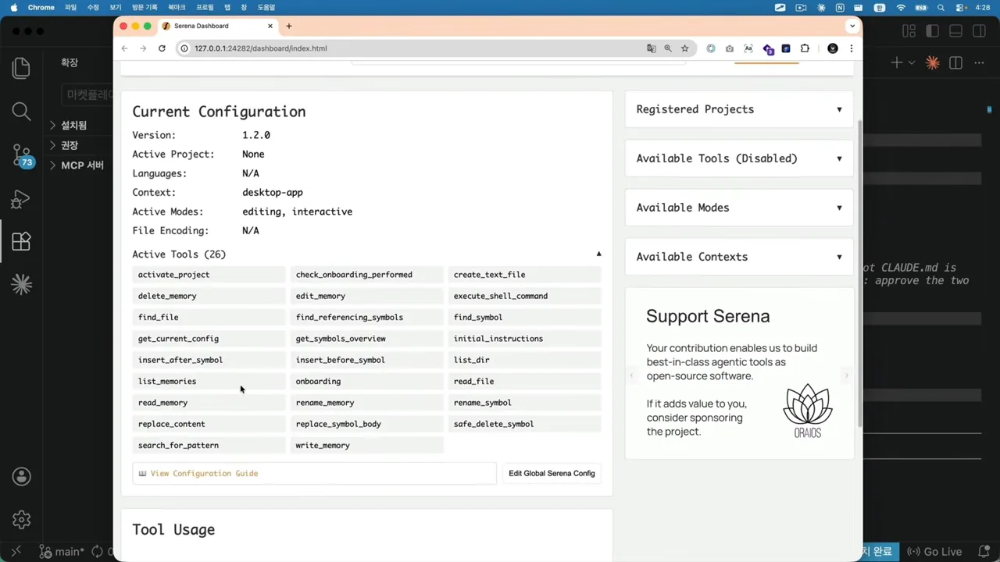
실제 프로젝트에서 써 보기
발표자는 "구글 로그인 버튼이 어디에 쓰이냐"고 물어요. 클로드는 Serena의 find_referencing_symbols를 써서 쓰이는 곳 세 군데를 표로 돌려줘요. 위치, 종류(re-export, import, JSX(JavaScript XML) 사용), 내용이 한 줄씩이에요. 표 아래에는 실제로 쓰는 곳은 /login 페이지 하나뿐이라는 결론과, 프로젝트 규칙 위반 1건까지 짚은 설명이 붙어요.
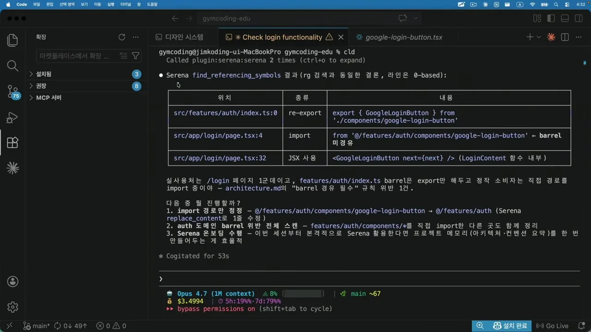
대시보드로 돌아가면 Tool Usage에 막대가 생겨요. activate_project, find_referencing_symbols, find_symbol 같은 도구가 각각 몇 번 불렸는지 보여요.
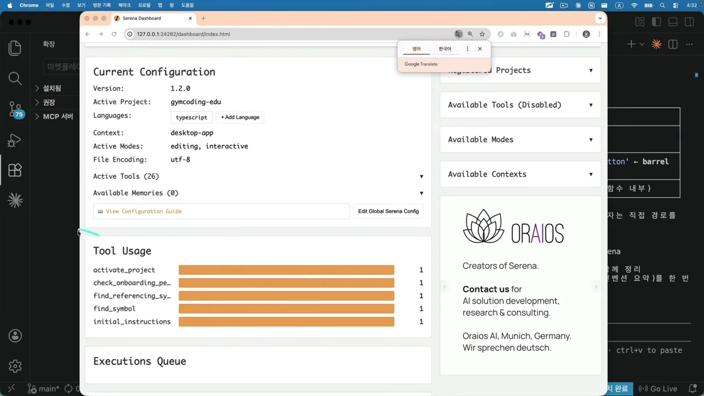
강의에서 자주 받는 질문도 하나 다뤄요. 말로 부탁했는데 원하는 MCP가 안 움직이면, 아래 하늘색 칸처럼 use serena mcp라고 이름을 직접 적어 주면 돼요. 그러면 Serena가 그 프로젝트를 활성화하고 도구를 제대로 써요.
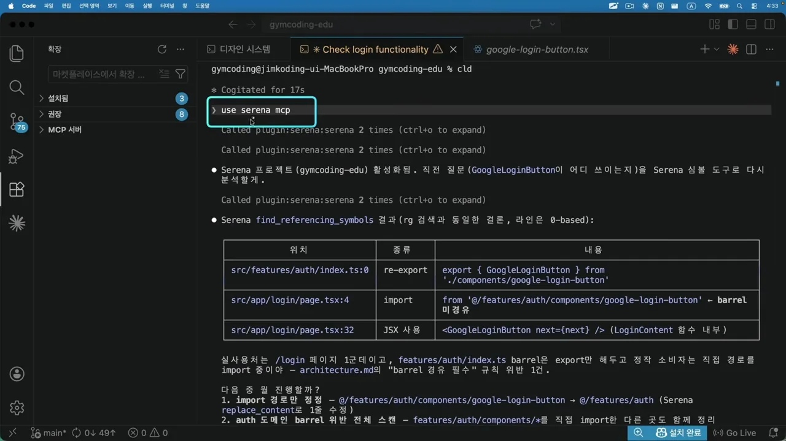
④ Hookify: 같은 실수를 미리 막기
Hookify는 클로드가 자주 하는 실수를 미리 막아 주는 Anthropic 공식 도구예요. 발표자는 이걸 하네스 엔지니어링과 묶어서 설명해요. 근거로 띄운 화면이 Mitchell Hashimoto의 블로그 글이에요. 맨 위 단락에 그가 이 방식을 'harness engineering'이라고 부른다는 문장과 정의가 있어요.
발표자는 그 정의를 이렇게 옮겨요.
에이전트가 실수할 때마다 그 실수가 다시는 발생하지 않도록 엔지니어링 하는 것
— 영상 12:12
즉 AI(Artificial Intelligence)가 실수하면 AI를 탓할 게 아니라, 그 실수가 다시 안 나오도록 환경을 고치라는 거예요. 아래 슬라이드처럼 Hookify는 클로드가 자주 하는 실수를 사전에 막는 쪽으로 이 생각을 실천하게 해 줘요.
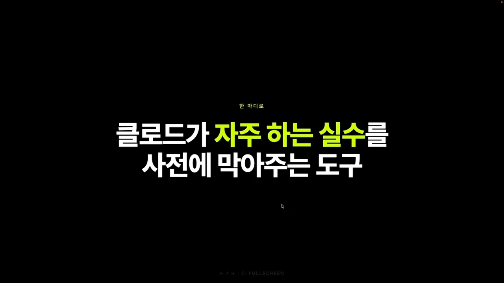
토큰이 새는 사이클
Hookify가 토큰 절약 도구이기도 한 이유가 아래 슬라이드예요. 제목은 '토큰이 진짜로 새는 지점'이에요. 클로드가 잘못 쓰면 우리가 "왜 거기 썼어요?"라고 지적하고, 클로드가 사과하고 정리한 뒤 다시 시도해요. 맨 아래 빨간 글씨처럼 이 사이클 한 번에 수천 토큰이 사라져요. 슬라이드에는 이 숫자가 추정이라고 적혀 있어요.
다음 슬라이드가 Hookify의 답이에요. 이 사이클을 시작도 하기 전에 끊어요. 도구 호출 직전에 자동으로 도는 이런 검사를 클로드 코드에서는 훅이라고 불러요. 그러면 토큰을 아끼는 동시에, 발표자 말로 '배가 산으로 갈' 확률도 줄어요.
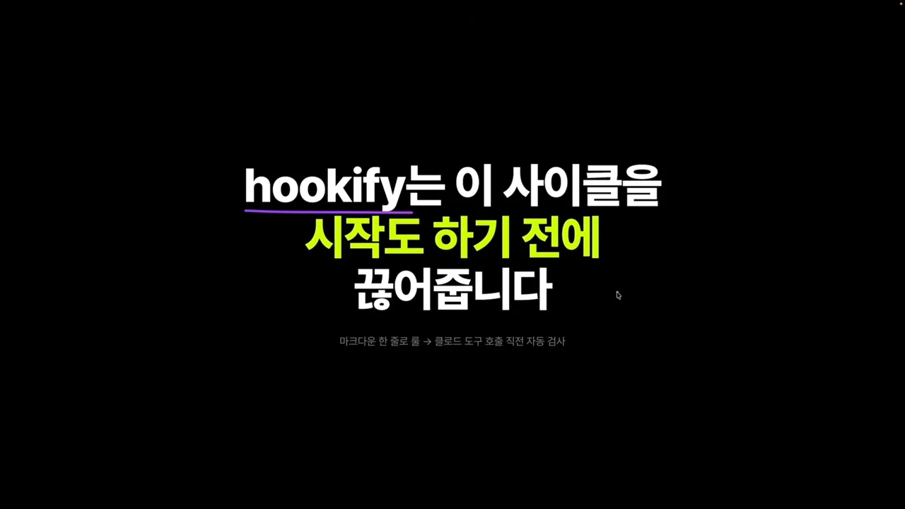
규칙 하나 만들어 보기
데모에서는 /hookify:hookify 프로덕션 코드에 console.log 쓰지 마라고 입력해요. 그러면 writing-rules 스킬이 불려 오고, 질문 몇 개가 차례로 떠요. 위쪽 탭이 Methods, Scope, Action, Submit 순서예요. 지금 보이는 첫 질문은 어떤 console 메서드를 막을지예요. console.log만 막기, log·debug·info 막기, 전부 막기 중에서 골라요.
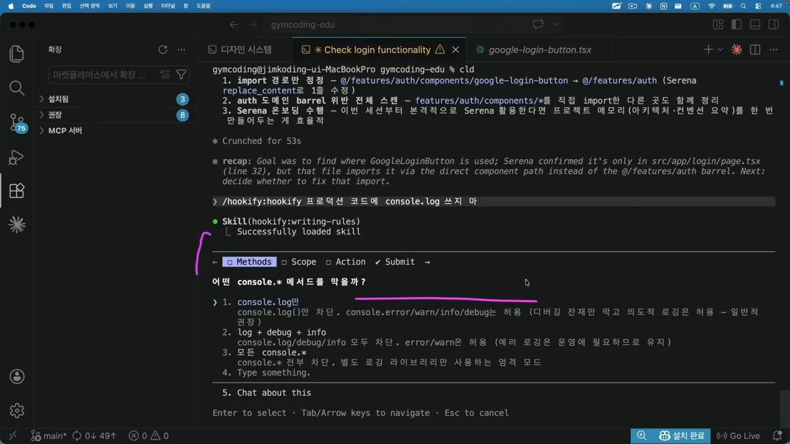
답하고 Submit을 누르면 .claude/ 폴더 아래에 hookify.warn-console-log.local.md 파일이 생겨요. 빨간 원 안이 프론트매터예요. event: file, action: warn이 적혀 있고, 조건은 세 개예요. 파일 경로가 src/ 아래 .ts나 .tsx이고, 테스트 파일이 아니고, 새로 쓰는 내용에 console.log(가 들어 있을 때예요. 그 아래 본문에는 클로드가 지킬 지침이 들어 있어요.
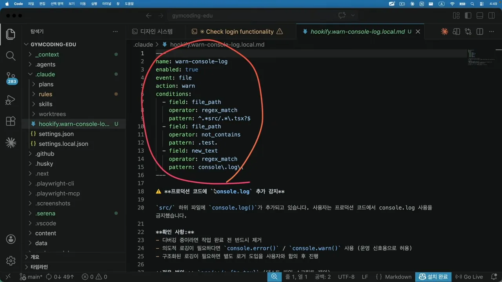
명령 여섯 개
Hookify 안에는 스킬과 명령이 여러 개 있어요. 아래 슬라이드 왼쪽이 명령, 오른쪽이 하는 일이에요. 발표자가 초록 밑줄을 그어 강조한 건 인자 없이 부르는 /hookify예요. 최근 대화에서 짜증 났던 패턴을 자동으로 뽑아 줘요.
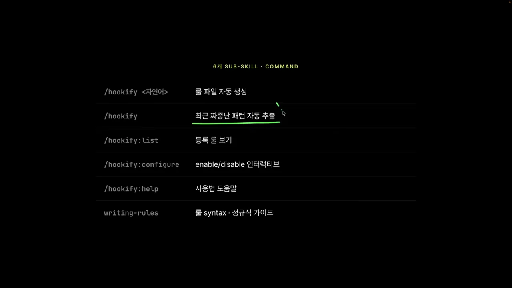
/hookify를 한 번 돌려 보라는 게 발표자의 팁이에요.
영상 14:05에서 보기